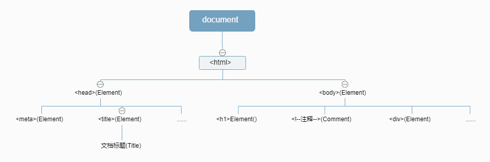

DOM全称为文档对象模型（Document Object Model ）。它将网页转化为一个 JavaScript 对象，从而可以用脚本进行各种操作。
浏览器会根据 DOM 模型，将结构化文档（比如 HTML 和 XML）解析成一系列的节点，再由这些节点组成一个树状结构（DOM Tree）。
节点
DOM 的最小组成单位叫做节点（node）。DOM 树就是由各种不同类型的节点组成。节点的类型有7种：
Document：整个文档树的根节点DocumentType：doctype标签节点，如<!DOCTYPE html>Element：网页的各种Html标签，如<body> <div>等Attribute：网页元素的属性Text：标签之间或者标签包含的文本Comment：注释DocumentFragment：文档的片段
除了根节点，其他节点都有三种层级关系。
- 父节点关系（parentNode）：直接的上级节点
- 子节点关系（childNodes）：直接的下级节点
- 同级节点关系（sibling）：拥有同一个父节点的同级节点

Node接口
属性
节点本身特征的属性
Node.nodeType- 可用来区分不同类型的节点
- 返回一个整数，表示节点的类型
- 元素节点（element）：1，对应常量
Node.ELEMENT_NODE - 文本节点（text）：3，对应常量
Node.TEXT_NODE - 注释节点（Comment）：8，对应常量
Node.COMMENT_NODE - 文档节点（Document）：9，对应常量
Node.DOCUMENT_NODE - 文档类型节点（DocumentType）：10，对应常量
Node.DOCUMENT_TYPE_NODE - 文档片断节点（DocumentFragment）：11，对应常量
Node.DOCUMENT_FRAGMENT_NODE
Node.nodeName- 返回当前节点的节点名称
- 文档节点（document）：
#document - 元素节点（element）：大写的标签名
- 属性节点（attr）：属性的名称
- 文本节点（text）：
#text - 文档片断节点（DocumentFragment）：
#document-fragment - 文档类型节点（DocumentType）：文档的类型
- 注释节点（Comment）：
#comment
Node.textContent- 表示一个节点及其后代的文本内容
Node.innerText- 表示一个节点及其后代的“渲染”文本内容的属性
Node.textContent和Node.innerText的区别Node.textContent会获取所有元素的内容，包括<script>和<style>元素，而Node.innerText不会。Node.innerText受 CSS 样式的影响，不会返回隐藏元素的文本，而Node.textContent会。Node.innerText受 CSS 样式的影响，所以性能更低。
节点结构关系属性
- 父子关系
Node.parentNodeNode.childNodesNode.firstChildNode.lastChild
兄弟关系
Node.nextSiblingNode.previousSibling
除
Node.parentNode外，其他关系属性均可获取到Text节点Node.childNodes返回一个伪数组（NodeList集合），成员包括当前节点的所有子节点。且NodeList对象是一个动态集合，一旦子节点发生变化，立刻会反映在返回结果之中。
- 父子关系
方法
Node.appendChild()：接受一个节点对象作为参数，将其作为最后一个子节点，插入当前节点Node.hasChildNodes()：返回一个布尔值，表示当前节点是否有子节点Node.cloneNode()：用于克隆一个节点。它接受一个布尔值作为参数，表示是否同时克隆子节点。它的返回值是一个克隆出来的新节点。Node.insertBefore()：将某个节点插入父节点内部的指定位置Node.removeChild()：接受一个子节点作为参数，用于从当前节点移除该子节点Node.replaceChild()：用于将一个新的节点，替换当前节点的某一个子节点Node.contains()：返回一个布尔值，表示参数节点是否满足以下三个条件之一：- 参数节点为当前节点。
- 参数节点为当前节点的子节点。
- 参数节点为当前节点的后代节点。
Node.isEqualNode()：返回一个布尔值，用于检查两个节点是否相等Node.isSameNode()：返回一个布尔值，表示两个节点是否为同一个节点Node.normalize()：去除空的文本节点，并且将毗邻的文本节点合并成一个
Document接口
属性
- 指向文档内部的某个节点的属性
document.doctype指向<DOCTYPE>节点，即文档类型节点。document.documentElement指向 DOM 的 html节点document.activeElement指向获得焦点的那个节点document.fullscreenElement返回当前以全屏状态展示的 DOM 元素。document.body指向<body>节点document.head指向<head>节点。document.scrollingElement返回文档的滚动元素。
- 返回文档特定元素的集合的属性
这些集合都是动态的，原节点有任何变化，立刻会反映在集合中。document.links属性返回当前文档所有设定了href属性的<a>及<area>节点。document.forms属性返回所有<form>表单节点。document.images属性返回页面所有<img>图片节点。document.scripts属性返回所有<script>节点。document.styleSheets属性返回文档内嵌或引入的样式表集合
- 返回文档信息的属性
document.documentURI和document.URL属性都返回一个字符串，表示当前文档的网址。document.domain属性返回当前文档的域名，不包含协议和接口。document.Location对象是浏览器提供的原生对象，提供 URL 相关的信息和操作方法。document.title属性返回当前文档的标题。document.characterSet属性返回当前文档的编码，比如UTF-8document.referrer属性返回一个字符串，表示当前文档的访问者来自哪里.
- 返回文档状态的属性
document.querySelector- 接受一个 CSS 选择器作为参数，返回匹配该选择器的元素节点。
- 如果有多个节点满足匹配条件，则返回第一个匹配的节点。
- 如果没有发现匹配的节点，则返回null。
document.querySelectorAll：返回一个NodeList对象，包含所有匹配给定选择器的节点document.getElementsByTagName：搜索 HTML 标签名，返回符合条件的元素。返回值是一个伪数组（HTMLCollection实例）document.getElementsByClassName：返回class名称符合条件的元素。返回值是一个伪数组（HTMLCollection实例）document.getElementsByName：选择拥有name属性的元素节点。返回值是一个伪数组（HTMLCollection实例）document.getElementById：返回匹配指定id属性的元素节点。如果没有发现匹配的节点，则返回null。document.createElement：生成元素节点，并返回该节点。document.createTextNode：生成文本节点，并返回该节点。document.hasFocus：返回一个布尔值，表示当前文档之中是否有元素被激活或获得焦点。
Element节点
Element节点对象对应网页的 HTML 元素。每一个 HTML 元素，在 DOM 树上都会转化成一个Element节点对象。
属性
Element.id属性返回指定元素的id属性，该属性可读写。Element.tagName属性返回指定元素的大写标签名Element.title属性用来读写当前元素的 HTML 属性titleElement.attributes属性返回一个类似数组的对象，成员是当前元素节点的所有属性节点Element.className属性用来读写当前元素节点的class属性。Element.classList返回一个伪数组，成员是当前元素节点的每个class。Element.innerHTML属性返回一个字符串，等同于该元素包含的所有 HTML 代码。Element.clientHeight属性返回一个整数值，表示元素节点的 CSS 高度Element.clientWidth属性返回元素节点的 CSS 宽度，同样只对块级元素Element.scrollHeight属性返回一个整数值（小数会四舍五入），表示当前元素的总高度（单位像素），包括溢出容器、当前不可见的部分。Element.scrollWidth属性表示当前元素的总宽度（单位像素），其他地方都与scrollHeight属性类似。Element.children属性返回一个类似数组的对象（HTMLCollection实例），包括当前元素节点的所有子元素。Element.childElementCount属性返回当前元素节点包含的子元素节点的个数，与Element.children.length的值相同。方法
Element.getAttribute：读取某个属性的值Element.getAttributeNames：返回当前元素的所有属性名Element.setAttribute：写入属性值Element.hasAttribute：某个属性是否存在Element.hasAttributes：当前元素是否有属性Element.removeAttribute：删除属性Element.querySelector：接受 CSS 选择器作为参数，返回父元素的第一个匹配的子元素。Element.querySelectorAll：接受 CSS 选择器作为参数，返回一个NodeList实例，包含所有匹配的子元素。Element.remove：方法继承自ChildNode接口，用于将当前元素节点从它的父节点移除。Element.getBoundingClientRect：方法返回一个对象，提供当前元素节点的大小、位置等信息，基本上就是 CSS 盒状模型的所有信息Element.addEventListener：添加事件的回调函数Element.removeEventListener：移除事件监听函数Element.dispatchEvent：触发事件